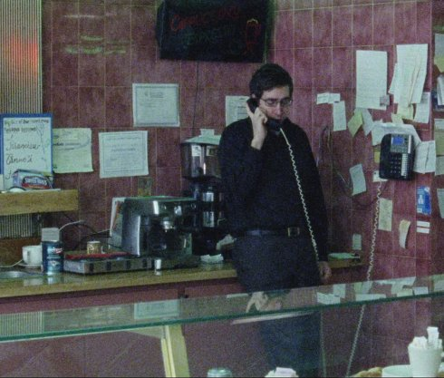
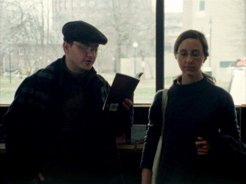

{kind=link}
Filmmaker in focus: Ted Fendt

SHORT STAY
|
USA
2016
|
Saturday | 12 oct | 8.30 pm | werkstattkino
Classical Period

|
USA
2018 B+E: Ted Fendt | DOP: Sage Einarsen
|
Friday 11 oct | 8.30 pm | Werkstattkino
Classical Period, largely speaking, consists of a series of sequences (there’s no narrative per se) in which three youngish people, together with the occasional friend hang out in Philadelphia and talk learnedly and at length about archaic and esoteric topics, largely to do with history, the classical tradition, and religion, mainly Catholic. It should be said that they expound rather than actually debate; by and large, it’s about displays of erudition rather than exchanges of ideas, although once in a while, a flash of brilliance emerges. (Jonathan Romney , Film Comment)
Ted Fendt born 1989 in Philadelphia, USA. He works as a filmmaker and translator and lives in Berlin and Vienna. Fendt's films are reminiscent of the beginnings of the American Mumblecore, shot on his own and with close friends. The result is unagitated cinematic miniatures of absurd life that remain undecided between tragedy and comedy. Everything is deliberately non-narrative, somehow intellectual and always ironic. Nevertheless, it is funny, despite the seriousness of the protagonists. The encounter with Fendt's films always calls to mind the longing for the past analogue life.
|
| Films Short Stay 2016 | Classical Period 2018
|